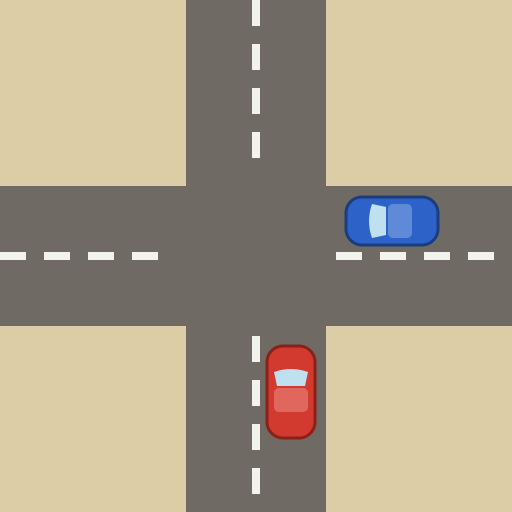

Verkeer in beeld
Kurt Braeye · Ligo Midden- en Zuid-West-Vlaanderen
Openen
Opslaan
Werkblad
Presenteren
Kruispunt
Rechte weg
Rotonde
Gewoon kruispunt
T-kruispunt
Voorbeelden
Zijweg komt van
↑ onder
↓ boven
→ links
← rechts
Breedte verticaal
Breedte horizontaal
Breedte van de weg
↕ Verticaal
↔ Horizontaal
Voorbeelden
Grootte van de rotonde
Fietspad
geen
op de rotonde (rondom)
apart, buiten de rotonde
Voorbeelden
Afspelen
Stap 1
Wissen
Klik op iets in de lijst, of sleep het naar het tekenvlak.
Afspelen
Stap 1
Stoppen
Er is een nieuwe versie van Verkeer in beeld.
Nu vernieuwen
Deze app heeft JavaScript nodig.